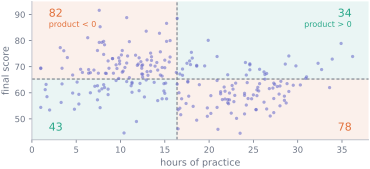
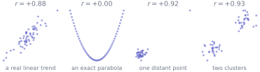
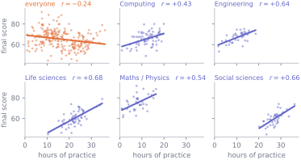

3. Describing two variables
Statistics · Unit 3
Why this unit is here
Almost no question worth asking is about one variable. Does practice help? Do the students who arrive strongest finish strongest? Does this treatment work? Every one of them is about how two things move together.
This unit gives you the standard summary of that — the correlation coefficient — and then spends most of its length on what the number cannot see. A correlation is one number standing in for a whole cloud of points, and the ways it misleads are specific, common, and easy to spot once you know to look.
3.1 Before you start
You should be able to:
- compute a mean and a standard deviation, and say what each is for — S2;
- read a histogram and a boxplot — S2;
- tell a quantitative variable from a categorical one — S1.
Quick check. The cohort’s final scores have mean 65.3 and standard deviation 8.4. A student scores 82. How many standard deviations above the mean is that?
TipShow the answer
\((82 - 65.3)/8.4 = 1.99\), so almost exactly two standard deviations above the mean.
That quantity has a name — the standardised value, or z-score — and this unit is built out of it. Subtracting the mean removes the location; dividing by the standard deviation removes the units and the scale. What is left is comparable across variables measured in completely different things.
3.2 The idea
Put the two variables on a scatterplot, then draw a vertical line at the mean of one and a horizontal line at the mean of the other. That divides the cloud into four quadrants, and the quadrants are the whole idea.
For each student, take how far their hours are from the mean hours, take how far their score is from the mean score, and multiply. A student who is above average on both gets a positive product; so does a student below average on both. A student above average on one and below on the other gets a negative one.
Add up all 237 products. If the cloud leans upwards the positives dominate and the total is positive; if it leans downwards the total is negative; if there is no lean the products cancel. That total, divided by \(n - 1\), is the covariance, and everything else in this unit is a repair to it.
3.3 The mechanics
Covariance, and why you cannot read it
\[ \operatorname{cov}(x, y) = \frac{1}{n-1}\sum_{i=1}^{n}(x_i - \bar{x})(y_i - \bar{y}) \]
The sign is informative. The size is not, because the covariance carries the units of both variables multiplied together — here marks × hours, a quantity nobody has intuition about. Worse, it depends on the units you happened to choose:
import numpy as np
import pandas as pd
cohort = pd.read_csv("data/cohort.csv")
usable = cohort.dropna(subset=["background", "final_score"])
usable = usable[usable["final_score"].between(0, 100)]
hours = usable["hours_practice"].to_numpy()
score = usable["final_score"].to_numpy()
# np.cov returns a 2x2 table: variances on the diagonal, the covariance at [0, 1]
print(f"cov in marks x hours {np.cov(hours, score, ddof=1)[0, 1]:10.4f}")
print(f"cov in marks x minutes {np.cov(hours * 60, score, ddof=1)[0, 1]:10.4f}")cov in marks x hours -16.0477
cov in marks x minutes -962.8637Nothing about the students changed. Recording practice in minutes rather than hours multiplied the covariance by 60. A summary that moves when you change your mind about units cannot be compared across studies.
Correlation is covariance made unitless
Divide by the standard deviation of each variable and the units cancel:
\[ r = \frac{\operatorname{cov}(x, y)}{s_x \, s_y} = \frac{1}{n-1}\sum_{i=1}^{n} z_{x,i}\, z_{y,i} , \]
where \(z_{x,i} = (x_i - \bar{x})/s_x\) is the standardised value from the quick check. The second form is worth carrying: the correlation is the sum of the products of z-scores, divided by \(n-1\). Standardise both variables, multiply them point by point, add up, divide by \(n-1\). (It is nearly the average of those products — the divisor is \(n-1\) rather than \(n\), for the same reason the sample variance uses \(n-1\), and on the cohort the two differ by 0.001.)
This is Pearson’s correlation coefficient, and it has four properties you should be able to state.
- It lies between \(-1\) and \(+1\), always.
- It is \(+1\) exactly when the points lie on a straight line of positive slope, and \(-1\) exactly when they lie on a straight line of negative slope.
- It is symmetric: \(r(x, y) = r(y, x)\). It does not know which variable you think is the cause.
- It is unchanged by shifting or rescaling either variable — hours to minutes, Celsius to Fahrenheit, marks to percentages — except that multiplying by a negative number flips its sign.
What the number cannot see
\(r\) measures linear association and nothing else. That restriction is not a technicality; it is where most misreadings come from.

Read those four again in order. The first is what people picture when they hear “\(r = 0.9\)”. The second has a perfect relationship and a correlation of zero, because the parabola rises as fast on the right as it falls on the left and the products cancel exactly — \(r = 0\) does not mean the variables are unrelated. The third is 39 points with no association and one point a long way off; delete that point and \(r\) collapses. The fourth is two clusters with no association inside either, and the correlation is measuring the gap between them, not anything about individual students.
The defence is the same in all four cases and takes five seconds: plot it.
When the relationship is monotone but not straight
Spearman’s rank correlation is Pearson’s \(r\) computed on the ranks rather than the values: replace the smallest \(x\) by 1, the next by 2, and so on, do the same for \(y\), and correlate those. It measures whether the relationship is consistently increasing or decreasing, without insisting it be a straight line, and one distant point can only ever be the largest rank rather than a value seventeen standard deviations out.
Use it when the relationship looks monotone but curved, when one or both variables are ordinal, or when extreme values are doing more work than you are comfortable with. Report which one you used — “correlation” unqualified means Pearson.
The other two combinations
Two variables need not both be quantitative.
Categorical with quantitative — the case that dominates real work — is a comparison of groups: report a summary of the quantitative variable within each category, and draw side-by-side boxplots on a shared scale. S10 makes this into inference.
Categorical with categorical is a contingency table of counts, read as conditional proportions. The direction matters and is a decision about the question, not about the data: the proportion of engineers who completed, and the proportion of completers who were engineers, are different numbers answering different questions, and confusing them is the error S4 is largely about.
3.4 Worked example
Practice against score, one number at a time.
from scipy import stats
r = np.corrcoef(hours, score)[0, 1] # the same 2x2 layout: r sits at row 0, column 1
rho = stats.spearmanr(hours, score).statistic
print(f"n = {hours.size}")
print(f"Pearson r = {r:+.4f}")
print(f"Spearman = {rho:+.4f}")n = 237
Pearson r = -0.2350
Spearman = -0.2585So a weak negative association: students who practise more tend, across the cohort as a whole, to score slightly lower. Spearman agrees in sign and is slightly stronger, which tells you the relationship is not being manufactured by a handful of extreme points.
M11 reports \(-0.2337\) for the same pair of columns. It is not a different answer: that unit filters on final_score alone and keeps 238 rows, while this one also drops the student with no recorded background and keeps 237. One student out of 238 shifts the correlation by \(0.0013\) — enough to change the second decimal place, from \(-0.23\) to \(-0.24\). If two numbers in these notes disagree, check the filter first.
Now split by background, which S1 established is the variable doing the damage.
print(f"{'background':<24}{'n':>5}{'Pearson':>10}{'Spearman':>10}")
print(f"{'everyone':<24}{hours.size:>5}{r:>+10.2f}{rho:>+10.2f}")
for name, group in usable.groupby("background"):
g_h, g_y = group["hours_practice"], group["final_score"]
print(f"{name:<24}{len(group):>5}"
f"{np.corrcoef(g_h, g_y)[0, 1]:>+10.2f}"
f"{stats.spearmanr(g_h, g_y).statistic:>+10.2f}")background n Pearson Spearman
everyone 237 -0.24 -0.26
Computing 69 +0.43 +0.38
Engineering 36 +0.64 +0.58
Life sciences 57 +0.68 +0.62
Mathematics or Physics 36 +0.54 +0.51
Social sciences 39 +0.66 +0.66
One correlation of \(-0.24\); five correlations between \(+0.43\) and \(+0.68\). The overall number is not wrong, and it is not a useful description of any student in the dataset, because no student is a member of “everyone” without also being a member of exactly one background.
That is the fourth panel of the four-dataset figure, in real data: a correlation computed across clusters is largely a statement about where the clusters sit. S12 gives the pattern its name and its general treatment.
3.5 Try it yourself
Exercise 1 Two variables have \(\operatorname{cov}(x, y) = 24\), \(s_x = 4\) and \(s_y = 15\).
- What is \(r\)?
- You now rescale \(x\) from metres to centimetres. What happens to the covariance, to \(s_x\), and to \(r\)?
TipShow the solution
\(r = 24 / (4 \times 15) = 0.4\).
Multiplying \(x\) by 100 multiplies the covariance by 100 (to 2400) and \(s_x\) by 100 (to 400). The correlation is \(2400/(400 \times 15) = 0.4\) — unchanged, because the same factor of 100 appears above and below the line. That invariance is the entire reason correlation is reported instead of covariance.
Exercise 2 A colleague finds \(r = 0.02\) between two variables and concludes that they are unrelated. Give two distinct reasons the conclusion does not follow, and say what you would ask to see.
TipShow the solution
- The relationship may not be linear. Any relation symmetric about the mean of \(x\) — a U-shape observed over a range centred on its vertex, for instance — produces \(r \approx 0\) while \(y\) may be completely determined by \(x\). The parabola panel in this unit has \(r\) exactly zero for that reason; observe the same parabola over an off-centre range and \(r\) climbs above 0.88.
- The sample may be too small to see anything. With \(n = 8\), \(r = 0.02\) is entirely consistent with a real and substantial association; \(r\) estimated from a small sample bounces around a great deal. S8 is how you find out.
- Or: the population may be a mixture, with opposite associations inside different groups that cancel when pooled — which is what happens in this unit’s worked example, only in reverse.
What to ask for: the scatterplot, and the sample size. In that order.
Exercise 3 Ten students are ranked on two measures. Their \(x\)-ranks are 1 to 10 in order, and their \(y\) values are \(1, 4, 9, 16, 25, 36, 49, 64, 81, 100\) — that is, \(y = x^2\) exactly.
Without computing anything, say what Spearman’s rank correlation must be, and whether Pearson’s \(r\) will be larger, smaller or equal.
TipShow the solution
Spearman is exactly \(+1\). Ranking \(y = x^2\) for positive \(x\) gives back the \(x\) ranks in the same order, and Pearson’s \(r\) on two identical rank sequences is 1. Spearman detects any strictly increasing relationship, however curved.
Pearson’s \(r\) will be smaller than 1 — about \(0.97\) — because the points do not lie on a straight line, and \(r = 1\) requires exactly that. It is high because \(y = x^2\) is not far from straight over this range; over a wider range it would fall further.
The general lesson: Spearman equal to 1 with Pearson below it is the signature of a curved but consistently increasing relationship.
3.6 Check it in Python
First, the claim that correlation is the average product of z-scores. Standardise both columns by hand and compare.
z_hours = (hours - hours.mean()) / hours.std(ddof=1)
z_score = (score - score.mean()) / score.std(ddof=1)
by_hand = (z_hours * z_score).sum() / (hours.size - 1)
print(f"average product of z-scores {by_hand:+.6f}")
print(f"numpy corrcoef {np.corrcoef(hours, score)[0, 1]:+.6f}")average product of z-scores -0.235010
numpy corrcoef -0.235010Second, that changing units leaves \(r\) alone but not the covariance:
minutes = hours * 60
print(f"covariance hours {np.cov(hours, score, ddof=1)[0, 1]:>10.4f}"
f" minutes {np.cov(minutes, score, ddof=1)[0, 1]:>10.4f}")
print(f"correlation hours {np.corrcoef(hours, score)[0, 1]:>10.4f}"
f" minutes {np.corrcoef(minutes, score)[0, 1]:>10.4f}")covariance hours -16.0477 minutes -962.8637
correlation hours -0.2350 minutes -0.2350Third — the one worth running yourself. It is tempting to write a check that says “if two variables are related, the correlation will notice”. Watch it fail on a relationship that is not merely strong but exact:
x = np.linspace(-2, 2, 61)
y = x ** 2 # y is completely determined by x
assert abs(np.corrcoef(x, y)[0, 1]) > 0.5, (
f"y is an exact function of x, yet r = {np.corrcoef(x, y)[0, 1]:.6f}"
)--------------------------------------------------------------------------- AssertionError Traceback (most recent call last) Cell In[9], line 3 1 x = np.linspace(-2, 2, 61) 2 y = x ** 2 # y is completely determined by x ----> 3 assert abs(np.corrcoef(x, y)[0, 1]) > 0.5, ( 4 f"y is an exact function of x, yet r = {np.corrcoef(x, y)[0, 1]:.6f}" 5 ) AssertionError: y is an exact function of x, yet r = -0.000000
Every \(y\) here is fixed by its \(x\) with no noise at all, and the correlation is zero to machine precision. It is zero because the grid is symmetric about \(x = 0\): for every point that contributes \(+c\) to the sum of products there is a mirror point contributing \(-c\). Shift the window off centre and the cancellation stops:
for lo, hi in [(-2, 2), (-1, 3), (0, 4)]:
x = np.linspace(lo, hi, 61)
print(f"x from {lo:>2} to {hi}: r = {np.corrcoef(x, x ** 2)[0, 1]:+.4f}")x from -2 to 2: r = -0.0000
x from -1 to 3: r = +0.8855
x from 0 to 4: r = +0.9673Same relationship, three different correlations, one of them zero. What \(r\) reports depends on the range you happened to observe, which is a good thing to know before quoting one.
3.7 Common wrong turns
Where this usually goes wrong
- Reading \(r = 0\) as “no relationship”
- It means no linear relationship. An exact parabola, observed symmetrically about its vertex, scores zero. Say “no linear association”, plot the data, and consider Spearman.
- Quoting a covariance
- Its size depends on your choice of units, so it is not comparable with anyone else’s. Divide by the two standard deviations and quote \(r\).
- Treating \(r\) as a slope
- \(r\) is unitless and cannot tell you how many marks an hour of practice is worth. Two datasets with identical correlations can have wildly different slopes. The slope is S11’s business, and it carries units.
- Computing \(r\) on a mixture
- If the data contain distinguishable groups, a pooled correlation partly measures the distance between the groups. Compute it within each group as well, always, and look at whether the answers agree.
- Letting one point decide
- A single distant observation can create a correlation from nothing or destroy a real one. Plot the data; recompute without the point; if the answer changes, say so in the write-up rather than choosing the version you prefer.
- Reading a correlation as a cause
- The coefficient is symmetric — it cannot even tell which variable came first. Everything S1 said about design applies here unchanged.
- Reporting \(r\) without \(n\)
- A correlation from 8 observations and one from 8,000 are not the same kind of evidence, and the number alone does not distinguish them.
3.8 Check yourself
Answers are at the foot of the page. Give a reason as well as an answer.
Which of these can change the correlation between height and weight in a sample?
- Converting height from centimetres to inches
- Converting weight from kilograms to pounds
- Adding 5 kg to everyone’s weight
- Dropping the three tallest people from the sample
Converting centimetres to inches multiplies every height by the same positive number. Does that change how closely the points follow a line?
The same as converting height: every weight is multiplied by one positive number.
Adding 5 kg moves every point by the same amount. Does the shape of the cloud change?
- In the cohort, \(r = -0.24\) overall and between \(+0.43\) and \(+0.68\) within each background. Which of those numbers is the “real” correlation between practice and score?
- Spearman’s rank correlation for a pair of variables is \(+1\) but Pearson’s is \(+0.8\). What does that tell you about the relationship?
- A study reports \(r = 0.62\) between two variables measured on 6 people and describes it as a strong relationship. Is that reading defensible?
- True or false: if \(r = +0.9\), then a one-standard-deviation increase in \(x\) is associated with a 0.9-standard-deviation increase in \(y\) on average.
TipShow the answers
(d). Correlation is invariant to shifting and positive rescaling, so (a),
- and (c) leave it exactly unchanged — the units cancel in the definition. Dropping the three tallest people changes which points are in the sample, which is a different operation entirely; it usually reduces \(r\) by removing the widest part of the range. Note the “can”: it is not guaranteed to change anything. If every point lay exactly on a straight line, \(r\) would be 1 before and after. It is the only option that can move the number at all.
Both, and neither is “the” correlation — they are answers to two different questions, exactly as in S1. \(-0.24\) describes the cohort pooled, and mostly reflects that quantitative-background students start ahead and practise less. The within-group figures describe students compared with others like them. If you had to report one number for “does practice go with better marks”, the within-group ones are closer to what was meant — but the honest answer reports both.
That the relationship is monotone but curved. Spearman being exactly 1 means the ranks agree perfectly: \(y\) increases every time \(x\) does. Pearson below 1 means the points do not lie on a straight line. Fit a straight line to this and the residuals — each point’s vertical distance from the line — will show a systematic bend.
No. With six observations, \(r = 0.62\) is unremarkable: correlations of that size arise easily between unrelated variables in samples that small, and the estimate itself bounces around enormously — S8 shows how to put a width on it. Ask for the scatterplot, and ask how many pairs of variables were examined before this one was reported.
True, and it is the most useful reading of \(r\) there is. Written in standardised units, the fitted straight line has slope exactly \(r\): on average a point one standard deviation above the mean in \(x\) sits \(r\) standard deviations above the mean in \(y\). If you said false because a correlation is not a slope, you were half right: it is not the slope in the original units, but in standardised units it is. Note “on average” and “associated with” — this is a description of the cloud, not a prediction for any individual and not a claim about what would happen if you intervened.